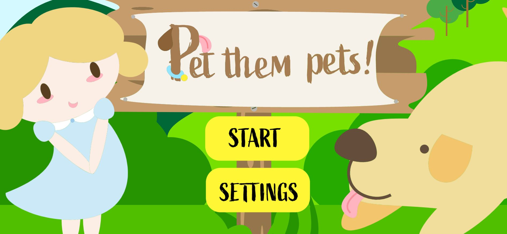
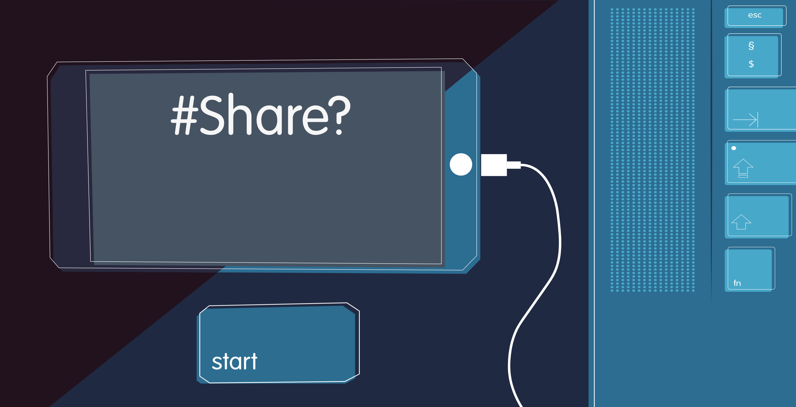

I dette projekt skulle jeg lave mit eget spil og fik derfor udvidet min viden min design af karakterere og baggrunde, samt færdigheder i CSS animationer, JavaScript og Adobe Illustrator.
Mit spil "Pet them pets!" handler om en lille pige, der er allergisk overfor katte, som gerne vil klappe hunde i parken. Derfor har jeg brugt designprincipper om former, hvor den lille pige mest består af runde elementer for at gøre hende mere nuttet og for at vise at hun er en god karakter, hundene af enten firkantede eller runde former for at vise at de er gode og pålidelige, og kattene har mere spidse former, for at vise at de er farlige. Dog er mit spil designet således at alt er meget rundt i det for at gøre det mere nuttet generelt.
Alle baggrunde, figurer og UI elementer er tegnet i Adobe Illustrator som vektorer, hvorefter de blev eksporteret til .svg filer. Brugen af vektorer skyldes, at ulig tegninger tegnet med pixels (f.eks. .png og .jpeg filer), så består vektorer af ren matematik, og det er derfor lige meget, hvilken størrelse du giver dem, så bliver illustrationen ikke grynet eller pixeleret.
Assetliste og design dokumentation.Efter at have designet alle elementer i spillet skulle jeg programmere det. Dette gjorde jeg vha. CSS animationer og JavaScript. For at holde styr på, hvordan tingene skulle køre i spillet, skulle jeg først lave et aktivitetsdiagram og et state-machine-diagram. Uheldigvis havde jeg ikke helt styr på state-machine-diagrammer, da jeg lavede mit spil, så nogle af de symboler og navne, der blev brugt er ikke korrekte, da jeg ikke på det tidspunkt havde fuldkommen styr på, at dette diagram skulle være i programmeringssprog, så jeg blandede det meget sammen med aktivitetsdiagrammet. Men i gruppeprojektet længere nede, fik jeg heldivis hjælp af mine gruppemedlemmer, så jeg kunne forstå, hvordan man laver et.
Dokumentation af design og diagrammerI mit spil løber dyrene utrolig stærkt, hvis jeg skulle ændre noget, så var det nok længden på løbe animationen, og hvor responsiv spillet er, det ser nemlig ikke fantastisk ud på mobil.
 Prøv spillet her!I dette projekt arbejde vi på en case fra Privatsnak.dk hvor vi skulle lave et spil om deling af nøgenbilleder til målgruppen 13-15 årige. Her brugte vi i gruppen Scrum og burndown charts til at uddele arbejde og holde styr på, hvor langt vi var med projektet. Begge metoder er gode til at give et overblik over ens projekt.
For at sikre os, at spillet passede til vores målgruppe fik vi fat i en teenager og lavede it interview med hende, så vi kunne finde ud af, hvad hun vidste om emnet, og hvad hun gerne ville se i et spil om det. På det tidspunkt havde vi allerede fundet en stil for spillet, og tegnet nogle forskellige figurer, og havde tre forskellige farvepalletter som vi viste vores teenager. Dette er ikke ideelt, når man skal se, hvad målgruppen kan lide, da de kan føle sig presset til at sige de kan lide noget, blot fordi de kan se man allerede har puttet arbejde ind i det. Derfor skulle vi nok have lavet nogle forskellige moodboards med ideer og stilarter der var meget forskellige, men ikke en defineret prototype, så test-personen kunne tale om, hvad de synes uden at føle sig presset.
Til sidst havde vi en fernisering, hvor vi inviterede en 8. klasse på besøg og så observerede vi, hvordan de reagerede på spillet, desuden fik vi dem til at skrive på en post-it note, hvad de synes om spillet efter de havde prøvet det.
Spillet er virkelig simpelt, da vi gerne ville have fokus på budskabet og det grafiske. Uheldigvis, blev spillet lidt for langsomt, men det ændrede vi efter vi fik feedback fra ferniseringen. Desuden var alle ikke helt glade for vinder skærmen, da den ikke passede med vores budskab. Vores spil var rimelig ligetil, men vores budskab blev meget simplificeret, så hvis vi skulle have ændret det skulle vi have gjort spille sværere og måske skrevet noget mere tekst på vores slutskærme. Vi havde også tænkt os at have en high-score board, men pga. manglende tid og en smule forvirring over, hvordan det skulle gøres, blev den aldrig lavet. Men vi havde stadig en tæller, hvor man fik point. Vi burde nok have fjernet den, da den ikke gjorde noget i det endelige spil.
